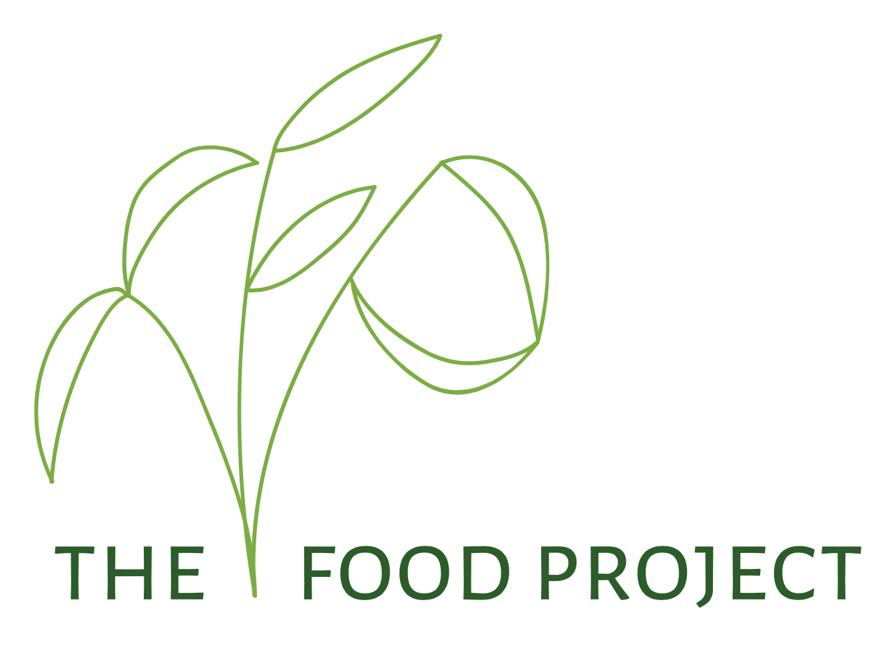
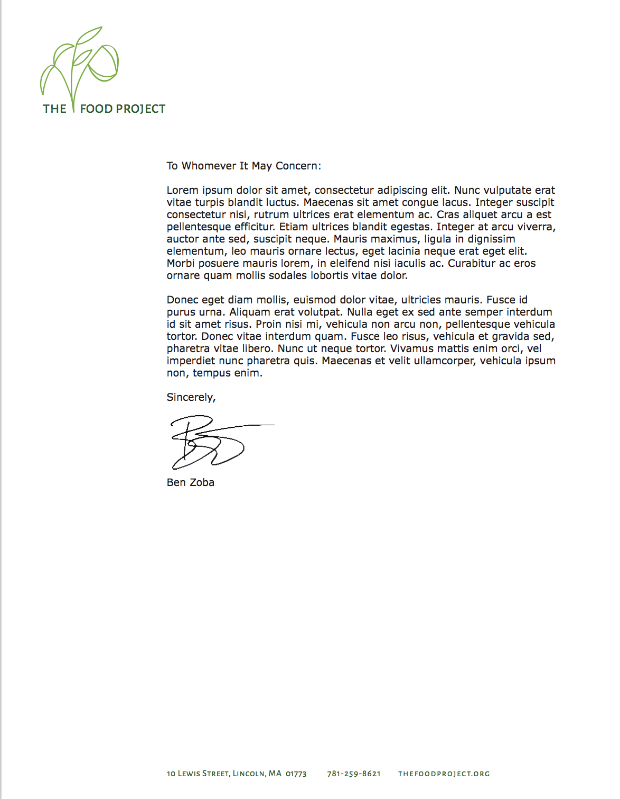
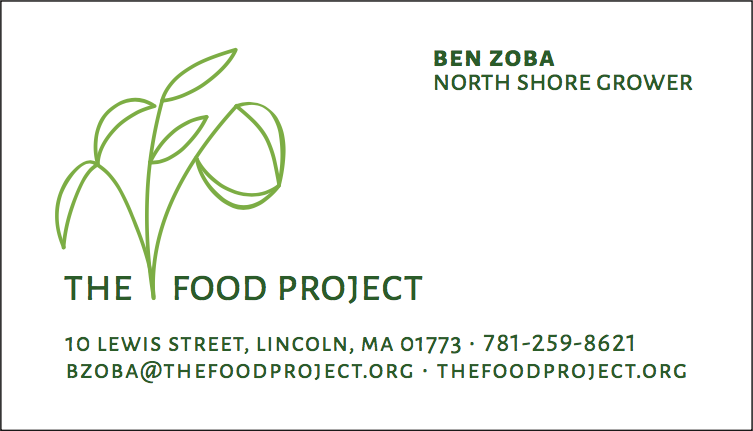
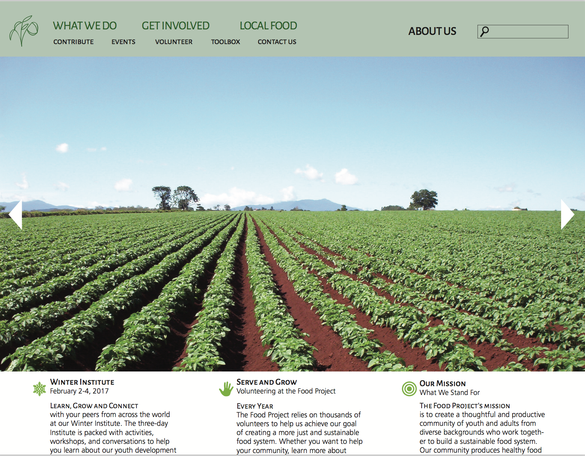

Food Project.
The Food Project was a rebranding project that focussed on creating a new logo and an accompanying website, letterhead, business card and process booklet. The most important part was to maintain the integrity of the company and the values while keeping the mood and feeling of community.
  